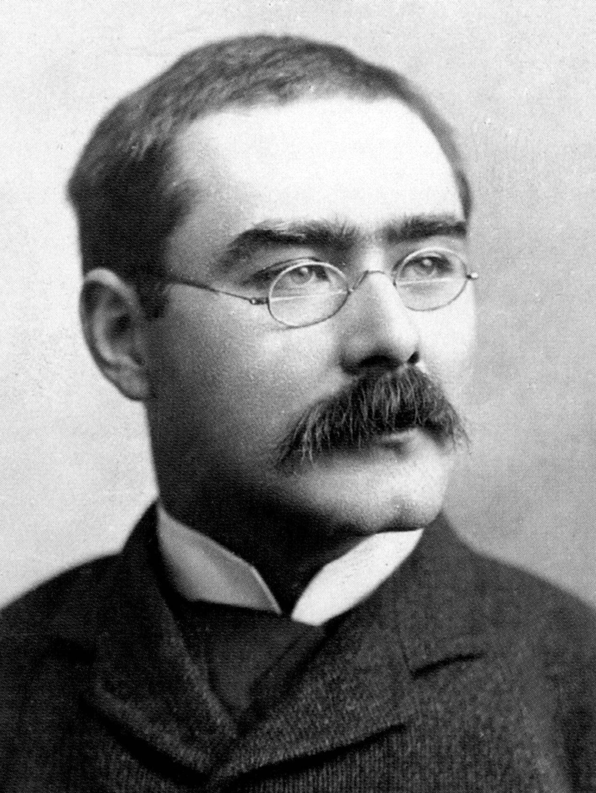
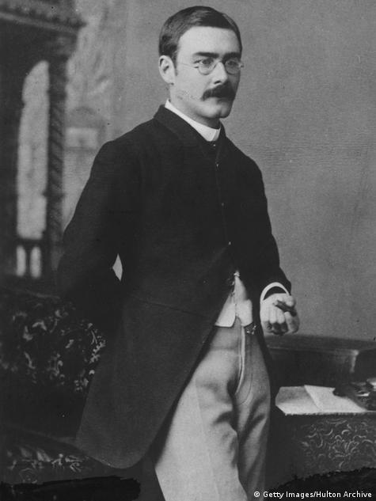
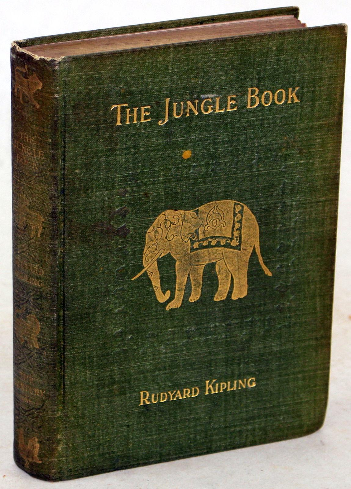

на главную страницу << >> English main page
>> English main page
Редьярд Киплинг
(Rudyard Kipling, 1865-1936)

The Gods Of The Copybook Headings
Дорогой реинкарнации ядвигался вслед векам.
Боги Большого Рынка! Я поклонялся вам.
Подглядывая сквозь пальцы, я видел вас снизу вверх...
Но Боги Азбучных Истин - Да! - Они пережили всех.
Мы жили тогда на деревьях. Они обучали нас
Воде и Огню. И тогда это было в первый раз.
Но им не хватало Драйва!
А нас этот драйв томил.
И мы ушли, а они остались там - обучать горилл.
Мы двигались вслед за Духом - они не меняли мест.
Но мы их снова встречали всюду куда нас привел Прогресс.
Они не летали на облаке - как Боги Большого Рынка -
Зато они точно знали - Да! - что погубило Римлян.
В надежде, что все устроится, они отошли в тень
И продолжали учить что Ночь -
Ночь и что День - День
Что лошади не летают как птицы по небесам.
Но мы пошли за Богами Рынка - они обещали нам.
В Кембрии Боги Рынка нам обещали мир,
Если мы разооружимся - разооружились мы.
И нас безоружных продали в горькое рабство - О!
И Боги Азбучных Истин сказали "Мирись со знакомым злом"
У первого женского торса нам общали жизнь
Полную - нужно просто с соседской женой дружить.
Но женщины перестали совсем на мужчин смотреть.
И Боги Азбучных Истин Сказали - "За
Прелюбодеянье - смерть"
Всеобщее изобилие обещано нам с утра.
Надо только ограбить Павла, чтоб накормить Петра.
Теперь у нас куча денег, ничего на них н купить.
И Боги Азбучных Истин сказали
"Не работающим - не жить"
И Боги Рынка отстали. Волшебники их ушли.
И даже самые глупые стали учиться и прочли,
Что Разум - всему основа, что мудрость всегда при нас.
Это Боги Истины снова разуму учат нас.
Все меняется. Однако генерал всегда в строю.
Возвращается собака на блевотину свою.
У свиньи высокородной шире лужа, крепче вонь.
Тычет дурень обожженным пальцем радостно в Огонь.
Но когда закроем старый и откроем новый век,
Чтоб забитый и усталый распрямился человек,
Тиражировать уставы заводи, Емеля, печь!
И Боги Азбучных Истин Старых вернутся громить и жечь.
Молитва перед боем
HYMN BEFORE ACTION
Землю сковала злоба. Моря бессвязна речь.
Встали чужие нации Вроде чужих стай.
Мы потеряли многих, Но мы обнажили меч.
Йегова, Бог Грома - Силу свою дай!
Щеголи и красавцы, Пламенные умы,
Хлюпики и мерзавцы - Все пред тобой равны.
Так не побрезгуй нами - В книжке своей отметь.
Твердой рукою, доктор, Выпиши нам смерть!
Тем же кто на коленях Клялся иным богам
Не было просветления Сколько досталось нам.
Мы к ним пришли за помощью В темные наши дни.
Пусть же твой гнев достанется Нам одним.
Паника, страх, смятение, Гордость, поспешность, месть -
Худшего преступления Я не припомню здесь
Выправи нам дыхание, Душу избавь от мук.
Дай наконец попробовать Смерть из твоих рук.
Мадонна! Ты в печали, Горька твоя слеза.
Нам завтра обещали Пред божии глаза.
Тому, кто выкормлен женщиной, Нужен и друг и враг.
Замолви за нас словечко, Из жалости, просто так!
Там собирают гвардию, Скоро и нам в бой.
Ты благоволил нашим отцам И я иду за тобой.
Душу своими знаками Слабую леденя,
Йегова, наше знамя, Слышишь ли ты меня?
“WHEN ‘OMER SMOTE ‘IS BLOOMIN’ LYRE”
Гомер и я
Песни земли и моря
Знал Гомер превосходно -
Знал, понимал, использовал -
С него я беру пример.
А те кто му внимали
Все это понимали,
Но прощали ему, поскольку
Он был Гомер
К ЧИТАТЕЛЮ
I have eaten your bread and salt.
Я делил с тобою и хлеб, и соль,
И воду пил, и вино.
И в жизни твоей, и в смерти твоей
Мы были с тобой одно.
Я бы мог уклониться от самых твоих
Трудных и грязных дел,
Но ни в райском саду,
Ни в Афганском аду
Я этого не хотел.
Я был с тобою и свит, и слит,
В седле бывал и в петле.
И пусть эта музыка веселит,
Тех, кто сидит в тепле.
Перевел Яков Фельдман
The Ballad of East and West
OH, East is East and West is West
Запад есть Запад, Восток есть Восток,
И их неизменна суть,
Пока не призвал облака и песок
Всевышний на Страшный Суд.
Но нет Востока, и Запада нет
И призрак их невесом,
Если двое серьезных мужчин
Выходят к лицу лицом.
Камал прошел с двадцатью людьми,
Как ветер из-под ветвей,
И у полковника он увел
Кобылу царских кровей.
Не просто кобылу, а самый цвет,
Увел, да и был таков.
И лишь опрокинул, нырнув в рассвет,
Зацепы ее подков.
И сын полковника встал и сказал
Джигитам, которых вел :
"Неужто не знает никто из вас,
Куда конокрад ушел?"
И сын офицера встал и сказал:
"Не будь я Мохаммед-Хан,
Не знал бы я троп, там где пуля в лоб
И между копыт туман.
Он вечером был ещё в Абазай,
В Боннаре - как рассвело.
И нет дороги ему назад
Иначе, чем форт Дюкло.
И, если ты пустишь коня в галоп,
Обгоняя попутных птиц,
Господь поможет тебе догнать
Врага у его границ.
Ущелье высунуло язык.
А дальше тебе - ни-ни.
Там каждый квадратный метр земли
Усеян его людьми.
Там слева - скала, и справа - скала.
Терновник лежит, упруг.
И можно услышать затвора щелк,
Где нет никого вокруг."
Полковничий сын берет жеребца:
Как колокол дышит рот.
И сердце в груди, как кипящий ад,
И шея, как эшафот.
Полковничий сын прибывает в форт.
Поешь, отдохни, постой!
Но тот, кто у вора висит на хвосте,
Не сядет за длинный стол.
Он дальше по следу, по белому свету
По голому - раз, два, три...
Пока не увидел отцовской кобылы
В ущелье, уже внутри.
Кобылы, Камала. Уже различал он
Вдали её глаз белок...
И выше и ниже,и дважды и трижды
Он взвёл и спустил курок.
"Стреляешь ты совсем как солдат -
Ответил ему Камаль.
Теперь покажи как ты скачешь, студент."
И пыль поглотила сталь.
И они скакали один в один
И глотали ущелья пыль.
И кончилось тем, что конь упал
И всадника придавил.
Камаль повернул кобылу назад -
Помочь тому, кто лежит.
"А знаешь ли ты - он спросил - студент,
Отчего ты так долго жив?"
"Ты видишь - коршун кружит вверху?
Ты слышишь шакалов вой?
Ты правильно понял меня, студент -
Они пришли за тобой.
Ты здесь в округе на двадцать миль
Не спрячешь от пули грудь.
Какого чёрта сюда один
Ты ехал столь долгий путь?"
"Я знаю - ответил полковничий сын -
Что нынче я гостем здесь.
Но прежде чем хищникам делать пир,
Сначала расходы взвесь.
И если тысяча сабель прийдёт
За кучкой моих костей,
Подумай, чем будешь ты угощать
Таких дорогих гостей.
Но если тебе нипочём цена
И горя не горек грех -
Шакал и коршун - семья одна.
Зови же, собака, всех."
Поверь мне,- ответил ему Камаль -
Я в хищниках знаю толк.
Ни слова больше о грязных псах -
Здесь волка встречает волк.
Перевел Яков Фельдман
If
IF you can keep your head when all about you
Когда б ты мог остаться хладнокровным
Среди безумцев, тычущих в тебя;
В сомнении в тебя тебе подобных -
Упрям и твёрд, сомнение любя;
Ждать без конца, ничуть не уставая,
Средь моря лжи - спокоен и правдив;
На ненависть - ничем не отвечая,
Ни слишком мудр, ни сверхкрасноречив;
Уметь мечтать стремительно, но строго;
И мысль ценить - как новый шаг вперёд;
Встречая и Триумф, и Катастрофу
Одним и тем же "Видели, пройдёт";
Стерпеть: тобою сказанною правдой
Глупцов дурачат, улучив момент;
Разбитый смысл склониться и исправить,
Не жалуясь на старый инструмент;
Весь прошлый блеск в коробку запечатать
И всю её поставить на пари;
И проиграть. И всё начать с начала.
И никогда о том не говорить.
Когда б ты мог, уставший запредельно,
Заставить тело бедное служить,
Опустошён трудом ночным и денным,
Но как безумный, Волей одержим;
С достоинством беседуя с толпою,
И с королём гуляя, как всегда;
Ни друг, ни враг не справятся с тобою,
Но всем с тобой считаться иногда;
Распоряжаться временем как средством,
В одну минуту втискивая век; -
Тогда владей Землёю как наследством,
Поскольку ты - Хороший Человек.
Перевел Яков Фельдман
L'ENVOI
When Earth's last picture is painted and the tubes are twisted
and dried,
И будет раскрашен последний холст,
И тюбик последний пуст,
И критик последний последний вздор
Уронит из мертвых уст,
И мы на вечность или на две
Уйдем от привычных дел,
Пока Господь из пыли кладбищ
Не вытащит наших тел.
И он вернет нам в глазницы блеск,
А в пальцы - послушный бег,
И скажет: "Ребята, валяй, твори -
Я сегодня плачу за всех"
На холст он выдаст нам небеса,
На кисти - хвосты комет,
И рядом с прочими встанет сам
Раскрашивать белый свет.
Перевел Яков Фельдман
Форумы, храмы, троны
Гибнут в потоке лет
Также легко, как скромный
Белых ромашек цвет.
Но так же, как новые почки
Взрываются в нашу честь,
На старых бесплодных почвах
Новым державам цвесть.
Не растолкует розам
Самый большой мудрец
Прошлой зимы морозы,
Прошлых цветов конец.
Храбро, наивно, кротко
Смотрят они вокруг,
Мысля свой век короткий
Как бесконечный круг.
Как милосердно Время!
Храбрость и слепота
Нас берегут и греют
Вслед полевым цветам.
Нет на душе смятенья
У полумёртвых тел -
Нас утешают тени
Вечностью наших дел
Перевел Яков Фельдман
Ангел Земли пришел к Адаму
И принес ему почвы степей.
Не хотелось пахать Адаму,
Он прогнал его прочь.
(На деревьях почки.)
Ангел Воды пришел к Адаму
И принес ему зелень морей.
Не хотелось плавать Адаму,
Он прогнал его прочь.
(На деревьях листья.)
Ангел Ветра пришел к Адаму
И принес ему вздохи небес.
Не хотелось летать Адаму,
Он прогнал его прочь.
(Яблони в цвету.)
Ангел Огня пришел к Адаму
И зажег в его сердце страсть.
Бросил Адам свой Рай
И спустился вниз.
(Яблоки в соку.)
Так и живет он -
Хозяин мира и раб страстей,
Всем на Земле владея,
Кроме себя.
(Дерево - в огонь.)
Перевел Яков Фельдман
И я когда-то так шагал,
И ты окончишь путь.
Я много книжек написал.
Читал ли что нибудь?
Иди читай, а здесь не стой,
Не будь настолько глуп!
Там, в этих книжках, я - живой.
А здесь - я только труп.
Перевел Яков Фельдман
My Father's Chair. Parliaments
of Henry III, 1265.
There are four good legs to my Father's Chair...
Поучение Генриха III своему сыну
Священники, Лорды. Народ и Корона –
Четыре ноги королевского трона.
Отец завещал мне устойчивый трон.
Хотел я быть мудрым, таким же как он.
Мне не нужен стул на одной ноге,
На двух или даже на трех.
От одной ноги в голове круги,
Стул на трех ногах тоже плох.
Я сидел на всех четырех ногах,
Ни единой не забывал.
И я никогда не качался на них,
И поэтому не упал.
И когда ты придешь занимать мой трон,
Балансируя налегке,
Никогда не садись на трон, если он
Стоит на одной ноге!
Перевел Яков Фельдман
ЗЕРКАЛО
THE LOOKING - GLASS
Раз - два - раз - два - три.
Раз - и - два - и - раз - два - три
Королева пред зеркалом пляшет одна
На себя в Зазеркалье глядит.
И пытается сбросить былые года
И не может себе угодить.
Раз - два - раз - два - три.
Раз - и - два - и - раз - два - три
У нее за плечами - Мария Стюарт,
Королей, королев череда.
Но она - королева и дочь короля,
Не боится она ни черта!
Раз - два - раз - два - три.
Раз - и - два - и - раз - два - три
Королева танцует в гостиной своей
И сквозь зубы негромко поет.
И страшней и противней кровавых теней
Ей самой - отраженье ее!
Раз - два - раз - два - три.
Раз - и - два - и - раз - два - три
Перевел Яков Фельдман
THE FIRES
Разводит огонь в очаге — каждый свой -
Каждый смертный под кровом своим,
И Четыре Ветра, что правят землей,
Отовсюду приносят дым.
То по холмам, то по далям морским
То в изменчивых небесах —
Все Четыре Ветра несут ко мне дым,
Так, что слезы стоят в глазах.
Так, что слезы от дыма стоят в глазах,
Что от скорби сердце щемит —
Весть о прежних днях, о былых часах
Каждый ветер в себе таит
Стоит раз любому из них подуть —
Ту же весть различу я в нем:
В четырех краях пролегал мой путь,
И везде мне был кров и дом.
И везде был очаг средь ночей сырых,
В непогоду везде был кров.
Я скорблю и ликую за четверых
В память всех четырех краев.
И могу ль я с бесстрастной душой судить
В чьем дому огонь горячей,
Если мне в одних довелось гостить,
А в других - принимать гостей?
И могу ль я чужим огнем пренебречь,
Пусть хозяин мне незнаком?
Разве просто было мне свой разжечь?
Как я бился над очагом!
И могу ли другого я не понять,
Скорбь и радость в его очах?
Это всё и мне пришлось испытать,
Это помнит и мой очаг.
О Четыре Ветра, вас нет быстрей,
Вы же знаете — я не лгу.
Донесите же песнь мою до друзей,
Пред которыми я в долгу,
Кто меня отогрел средь ночей сырых,
В непогоду — пустил под кров.
Я, любя и ликуя за четверых,
Спел им песнь Четырех Ветров.
Перевод В. Шубинского
THE LOVE SONG OF HAR DYAL
Одна па крыше, я гляжу на север,
Слежу зарниц вечернюю игру:
То отблески шагов твоих на север.
Вернись, любимый, или я умру.
Базар внизу безлюден и спокоен,
Устало спят верблюды на ветру,
И спят рабы — твоя добыча, воин.
Вернись, любимый, или я умру.
Жена отца сварливей год от году,
Гну спину днем, в ночи и поутру...
Слезами запиваю хлеб невзгоды.
Вернись, любимый, или я умру.
Перевод Э. Линецкой
THE SONS OF MARTHA
Дети Марии легко живут, к части они рождены благой.
А Детям Марфы достался труд и сердце, которому чужд покой.
И за то, что упреки Марфы грешны были пред Богом, пришедшим к ней,
Детям Марии служить должны Дети ее до скончанья дней.
Это на них во веки веков прокладка дорог в жару и в мороз,
Это на них ход рычагов; это на них вращенье колес.
Это на них всегда и везде погрузка, отправка вещей и душ,
Доставка по суше и по воде Детей Марии в любую глушь.
“Сдвинься”, — горе они говорят. “Исчезни”, — они говорят реке,
И через скалы пути торят, и скалы покорствуют их руке.
И холмы исчезают с лица земли, осушаются реки за пядью пядь,
Чтоб Дети Марии потом могли в дороге спокойно и сладко спать.
Смерть сквозь перчатки им леденит пальцы, сплетающие провода,
Алчно за ними она следит, подстерегает везде и всегда.
А они на заре покидают жилье, и входят в страшное стойло к ней,
И дотемна укрощают ее, как, взяв на аркан, укрощают коней.
Отдыха знать им вовек нельзя; Веры для них недоступен Храм.
В недра земли их ведет стезя, свои алтари они строят там,
Чтобы сочилась из скважин вода, чтобы, в землю назад уйдя,
Снова поила она города вместе с каждой каплей дождя.
Они не твердят, что Господь сулит разбудить их пред тем, как гайки слетят,
Они не бубнят, что Господь простит, брось они службу когда хотят.
И на давно обжитых путях, и там, где еще не ступал человек,
В труде и бденье — и только так — Дети Марфы проводят век.
Двигая камни, врубаясь в лес, чтоб сделать путь прямей и ровней,
Ты видишь кровь — это значит: здесь прошел один из ее Детей.
Он не принял мук ради веры святой, не строил лестницу в небеса,
Он просто исполнил свой долг простой, в общее дело свой вклад внеся.
А Детям Марии чего желать? Они знают — ангелы их хранят.
Они знают — им дана Благодать, на них Милосердья направлен взгляд.
Они слышат Слово, сидят у ног и, зная, что Бог их благословил,
Свое бремя взвалили на Бога, а Бог — на Детей Марфы его взвалил.
Перевод Д.3акса
THE GLORY OF THE GARDEN
Подобна саду Англия - не сыщется милей
Ее цветущих клумб и гряд, газонов и аллей,
Ее павлинов и дерев, и статуй, и террас,
Но Слава Сада в том, чего отнюдь не видит глаз.
И если дальше отойти - к стене, на самый край,
Для инструментов и горшков увидишь ты сарай.
Теплицы там и парники, и тачки, и носилки,
Дренаж и ряд навозных куч, насосы и косилки.
Увидишь там садовников и их учеников,
Что приучаются к труду, причем без лишних слов,
Без крику - лишь пугая птиц, кричим мы по весне,
А Славе Сада проку нет в досужей болтовне.
Одни рассаду из горшков выносят на гряду,
Других не стоит допускать к столь тонкому труду:
Им лучше стричь, копать, косить, и подсыпать, и месть -
Работа, кто бы ни пришел, во Славу Сада есть.
И нет ни слишком чистых рук, ни слишком тонких ног,
Ни слабоватого ума - любой найти бы смог
Себе занятье по душе, работу по плечу -
А Славе Сада дать не жаль от Славы по лучу.
Засучивай же рукава и делай, что велят -
Пусть будет то борьба со тлей или прополка гряд.
Когда же стихнет боль в спине и высохнут мозоли,
Тогда во Славе Сада ты достоин будешь доли.
Адама поместил в Эдем садовником Господь -
И на коленках гряды тот не брезговал полоть.
Умойся же и помолись, окончив все дела,
Чтоб Слава Сада твоего немеркнущей была.
И Славе Сада вечно быть такою, как была!
Перевод С. Степанова
Мохнатый шмель - на душистый хмель,
Мотылек - на вьюнок луговой,
А цыган идет, куда воля ведет,
За своей цыганской звездой!
А цыган идет, куда воля ведет,
Куда очи его глядят,
За звездой вослед он пройдет весь свет -
И к подруге придет назад.
От палаток таборных позади
К неизвестности впереди
(Восход нас ждет на краю земли) -
Уходи, цыган, уходи!
Полосатый змей - в расщелину скал,
Жеребец - на простор степей.
А цыганская дочь - за любимым в ночь,
По закону крови своей.
Дикий вепрь - в глушь торфяных болот,
Цапля серая - в камыши.
А цыганская дочь - за любимым в ночь,
По родству бродяжьей души.
И вдвоем по тропе, навстречу судьбе,
Не гадая, в ад или в рай.
Так и надо идти, не страшась пути,
Хоть на край земли, хоть за край!
Так вперед! - за цыганской звездой кочевой -
К синим айсбергам стылых морей,
Где искрятся суда от замерзшего льда
Под сияньем полярных огней.
Так вперед - за цыганской звездой кочевой
До ревущих южных широт,
Где свирепая буря, как Божья метла,
Океанскую пыль метет.
Так вперед - за цыганской звездой кочевой -
На закат, где дрожат паруса,
И глаза глядят с бесприютной тоской
В багровеющие небеса.
Так вперед - за цыганской звездой кочевой -
На свиданье с зарей, на восток,
Где, тиха и нежна, розовеет волна,
На рассветный вползая песок.
Дикий сокол взмывает за облака,
В дебри леса уходит лось.
А мужчина должен подругу искать -
Исстари так повелось.
Мужчина должен подругу найти
Летите,стрелы дорог!
Восход нас ждет на краю земли,
И земля - вся у наших ног!
перевод Г.Кружкова
  
© 2001 Elena and Yakov Feldman